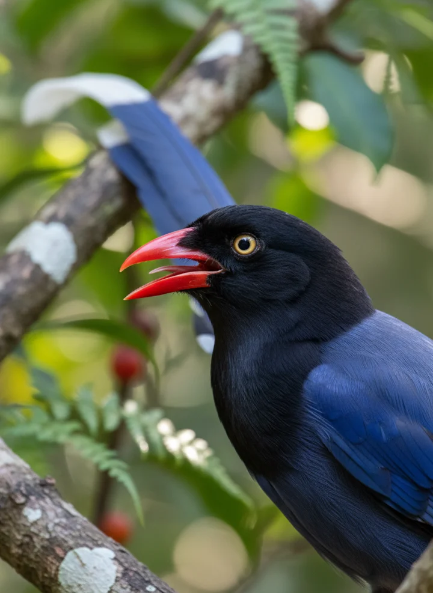
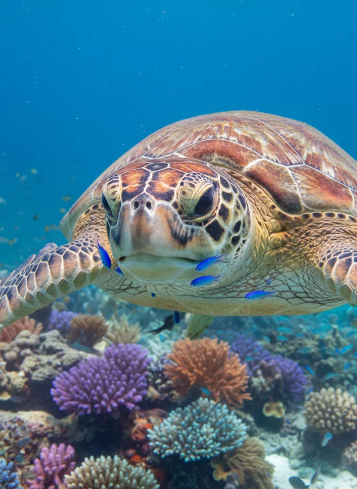
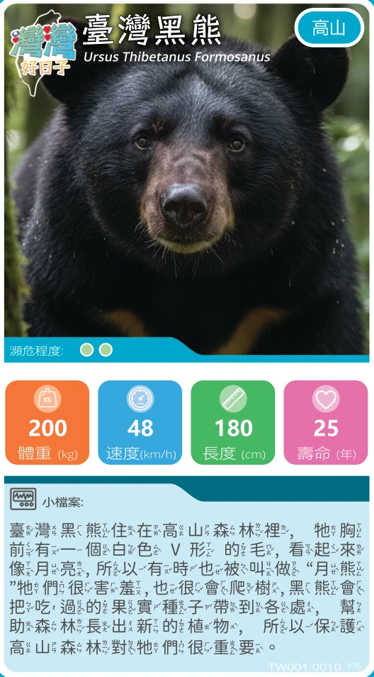

Deal a little adventure.
Shuffle and deal the cards equally. Keep your stack face down — no peeking or rearranging!
From mountain forests to sparkling seas.
Meet the animals of Taiwan, one card at a time.

04 / BLUE MAGPIE
15 / GREEN SEA TURTLE
YOUR NEXT ADVENTURE ↗A black bear in the forest. A magpie in the treetops. A turtle beneath the waves. Get to know Taiwan’s wildlife through a card game that turns every round into a new discovery.
Big personalities. Tiny details.
Which animal will be your favourite?
Simple rules. A different adventure every round.
Open the original rules ↗繁體中文 · PDFShuffle and deal the cards equally. Keep your stack face down — no peeking or rearranging!
Look at your top card and choose a category. Everyone reveals their top card and compares that number.
The highest number wins the round and collects the cards. After 20 minutes, the biggest collection wins.